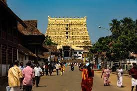

The Gooty Fort, also known as Ravadurg, is a ruined fort located on a hill in the Gooty town of Andhra Pradesh, India. The word Gooty (locally pronounced "Gutti") is derived from the town's original name, Gowthampuri. It is one of the centrally protected monuments of national importance.The fort later came under the control of the Vijayanagara Empire. During the reign of Venkata II (r. c. 1584-1614), the Vijayanagara lost the fort to the Qutb Shahi dynasty. The Mughals appear to have controlled the fort after their conquest of the Qutb Shahi capital Golconda. Around 1746 CE, the Maratha general Raja Murarirao Ghorpade captured the fort, and made it his permanent residence eight years later. He repaired the fort, and commissioned the stucco ornamentation of the small gateways
Know more
Hampi or Hampe, also referred to as the Group of Monuments at Hampi, is a UNESCO World Heritage Site located in Hampi (City), Vijayanagara district, east-central Karnataka, India.[2] Hampi predates the Vijayanagara Empire, it is mentioned in the Ramayana and the Puranas of Hinduism as Pampa Devi Tirtha Kshetra.[3][4] Hampi continues to be an important religious centre, housing the Virupaksha Temple, an active Adi Shankara-linked monastery and various monuments belonging to the old city.
know more
Sri Ananta Padmanabhaswamy Temple is a Hindu temple located in Thiruvananthapuram, the capital of the state of Kerala, India. Anantapadmanabhu means one who has a lotus in the navel and has no end. Sri Anantapadmanabhaswamy Temple is a temple dedicated to Lord Vishnu. The management of this temple is currently run by the trustees of the Travancore royal family,Travancore, locally known as Thiruvananthapuram or Trivandrum is currently the capital of Kerala. Previously known as Ananthasayanam named after Lord Vishnu, Trivandrum has many legends associated with its origin.It is believed that the origin of Trivandrum is connected with the origin of the Padmanabhaswamy Temple. One of the stories associated with it is that of a woman who found a baby boy in the Anantha Kadu (the spot where the temple stands today, previously a jungle). She fed the crying baby and left him under the shade of a tree. When she returned, she found a five-headed cobra protecting the baby from the sun. The baby, believed to be an incarnation of Lord Vishnu was then offered milk and Kanji (rice soup) in a coconut shell.
Know more
The Taj Mahal is an ivory-white marble mausoleum on the south bank of the Yamuna river in the Indian city of Agra. It was commissioned in 1632 by the Mughal emperor, Shah Jahan (reigned from 1628 to 1658), to house the tomb of his favourite wife, Mumtaz Mahal.The Taj Mahal is considered to be the greatest architectural achievement in the whole range of Indo-Islamic architecture. Its recognised architectonic beauty has a rhythmic combination of solids and voids, concave and convex and light shadow; such as arches and domes further increases the aesthetic aspect. The colour combination of lush green scape reddish pathway and blue sky over it show cases the monument in ever changing tints and moods.
Know more
The Charminar (lit.'four minarets') is a monument located in Hyderabad, Telangana, India. Constructed in 1591, the landmark is a symbol of Hyderabad and officially incorporated in the emblem of Telangana.[3] The Charminar's long history includes the existence of a mosque on its top floor for more than 425 years. While both historically and religiously significant, it is also known for its popular and busy local markets surrounding the structure, and has become one of the most frequented tourist attractions in Hyderabad.
know moreEllora Caves are a rock-cut Hindu, Buddhist and Jain cave complex, with artwork dating from the period 600–1000 CE, located in the Sambhaji nagar District of Maharashtra, India.[1] Ellora is a UNESCO World Heritage Site.All of the Ellora monuments were built during the Rashtrakuta dynasty which constructed part of the Hindu and Buddhist caves and the Jain caves. Funding for the construction of the monuments was provided by royalsAll of the Ellora monuments were built during the Rashtrakuta dynasty (r. 753-982 CE), which constructed part of the Hindu and Buddhist caves and the Jain caves. Funding for the construction of the monuments was provided by royals, traders and the wealthy of the region.Ellora Caves are situated 29 kilometres (18 miles) north-west of Sambhaji Nagar, and about
know more